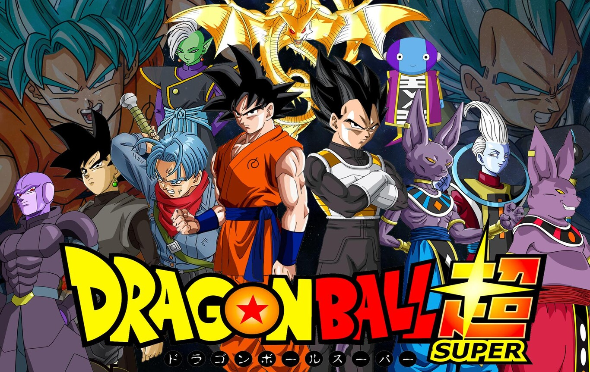
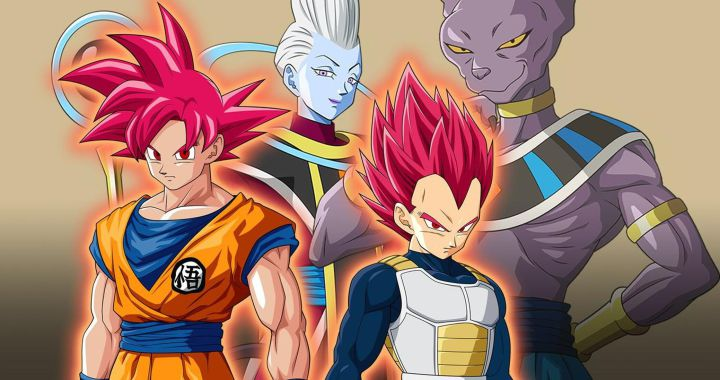

Dragon Ball Super (ドラゴンボール超スーパー Doragon Bōru Sūpā?) es una serie de manga japonesa escrita por Akira Toriyama e ilustrada por Toyotarō. Se trata de una secuela del manga original de Dragon Ball de Toriyama, que sigue las aventuras de Goku y sus amigos durante el lapso de diez años tras la derrota de Majin Boo. Comenzó a serializarse en la revista V Jump de Shūeisha el 20 de junio de 2015.
Una adaptación televisiva al anime de 131 episodios fue producida por Toei Animation y se emitió en Japón desde el 5 de julio de 2015 hasta el 25 de marzo de 2018. Una película secuela, Dragon Ball Super: Broly, se estrenó el 14 de diciembre de 2018 y se convirtió en la película de anime más taquillera de la franquicia. Una segunda película, Super Hero, se estrenará el 11 de junio de 2022.
  Inicio (Dragon Ball Z) Pág_1